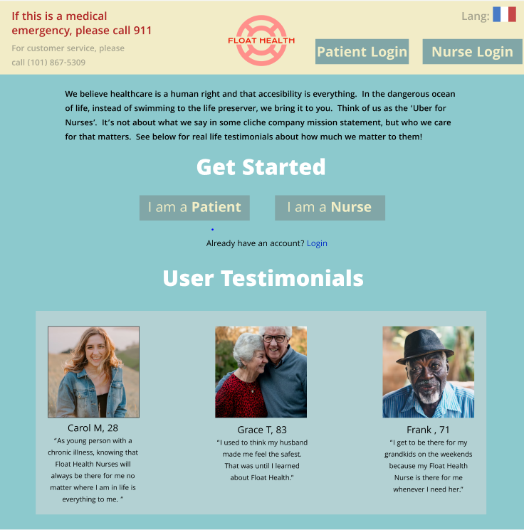

Projects
Personas-Storyboard

Interface interaction observations for personas and storyboarding. This project solves the problem of how to abstract out a model of the user of an interface given real world observations and interviews of users. We care about this problem because not every user is the same and if we want to match the user's expectations then we need a model/abstraction to be able to do so. The audience was laundry machine users and designers.
Responsive Redesign

Redesigning an existing website for dynamic screensizes. This project solves the problem of how do you make a website readable, clear, user friendly, and have a nice layout when the screensize changes. We care about this problem because not all devices are the same size. The audience was the car repair shop whose website I redesigned and the users of said shop.
Iterative Design
Iteratively implementing a website for a startup. This project solves the problem of how do we incorporate user feedback to improve upon a product. We care about this problem because user opinions matter. The audience was both FloatHealth, which is the startup I designed a hi-fi prototype for, as well as users and workers of FloatHealth, including sick people and nurses.
Development

Building an interactive website. This project solves the problem of how do we make a website interactive. We care about this problem because many of the functionality of the modern internet relies on the ability for a website to be intereactive. The audience was the customers of the bakery I created the website for.